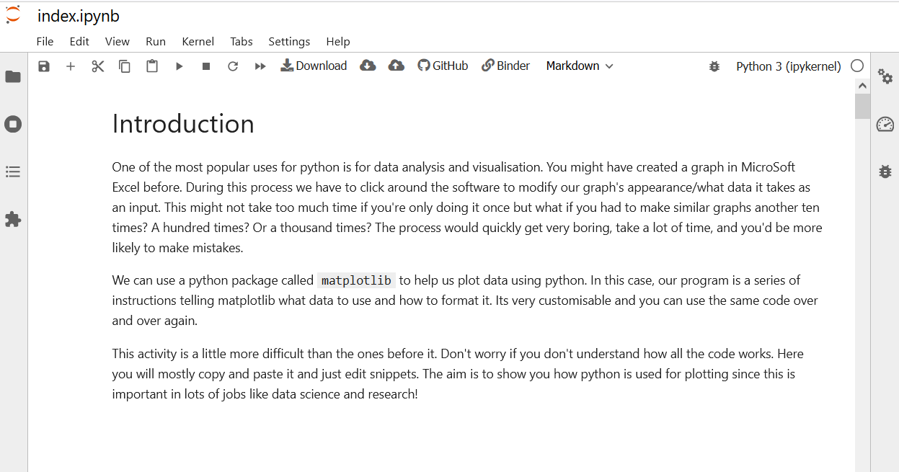
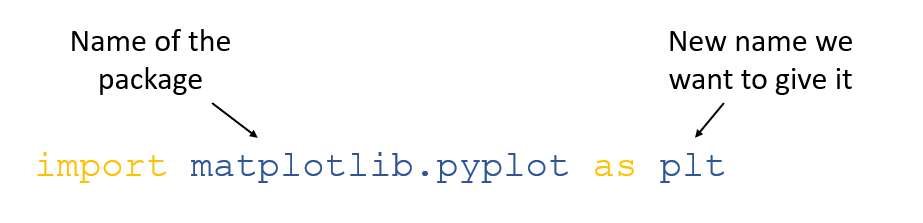
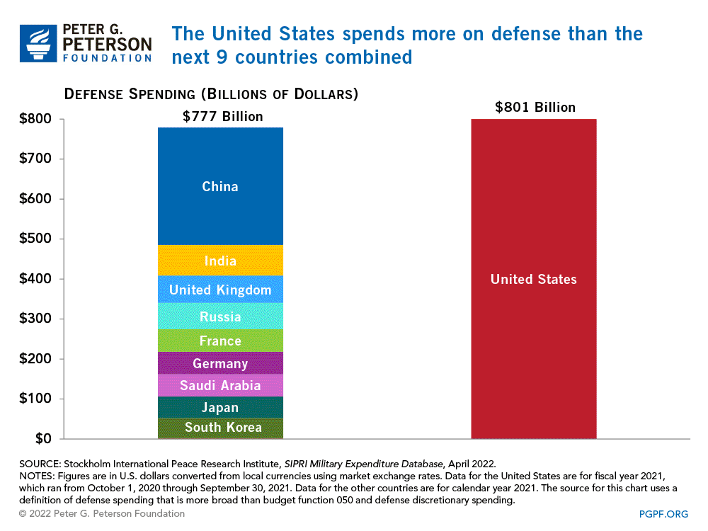

Activity 3 - Python plotting
Introduction
One of the most popular uses for python is for data analysis and visualisation. You might have created a graph in MicroSoft Excel before. During this process we have to click around the software to modify our graph’s appearance/what data it takes as an input. This might not take too much time if you’re only doing it once but what if you had to make similar graphs another ten times? A hundred times? Or a thousand times? The process would quickly get very boring, take a lot of time, and you’d be more likely to make mistakes.
We can use a python package called matplotlib to help us
plot data using python. In this case, our program is a series of
instructions telling matplotlib what data to use and how to format it.
Its very customisable and you can use the same code over and over
again.
This activity is a little more difficult than the ones before it. Don’t worry if you don’t understand how all the code works. Here you will mostly copy and paste it and just edit snippets. The aim is to show you how python is used for plotting since this is important in lots of jobs like data science and research!
Python plotting
Women in STEM
In the following activity we are going to create our own customised version of this graph:

We will use our own colours, line widths and line styles. In our previous activities we used replit to run all our code contained in a python script. This was ideal as we wanted to run all our code in one go. However, in this activity we want to be able to customise our graphs in an interactive way. Because of this we are going to use a type of python notebook called a ‘Jupyter notebook’.
We have created an empty Jupyter notebook for you to use at the following link. Don’t worry if it takes a while to load! As long as the circles are spinning it is just booting up, this might take 5 minutes or so. Once it has finished loading it should look like this:

Jupyter notebooks contain chunks of written text and code blocks. In the previous activities we wrote scripts using replit. The script was then ran all at once. Jupyter notebooks let you create small blocks of code and run each separately.
For this activity we will be pasting the code from this page into the empty code chunks, pressing ‘play’ and seeing what happens. We have also included several challenges to let you modify the code!

If you get stuck inserting your code we have also created a version of the same notebook but with the code chunks already pasted for you. The link is here.
Load our packages
In the previous activity we loaded a python package called
sleep that contained functions to let python carry out
additional tasks. Python does not know how to process and plot data on
its own. So in this activity we’re going to need to load two extra
packages known as ‘pandas’ and ‘matplotlib’. ‘Pandas’ is a package that
lets python read and edit data, much like you’d use Excel to process raw
data. ‘Matplotlib’ is the package that then lets us plot the data. We
load them by pasting the following code into our first chunk and
pressing the play button:
import matplotlib.pyplot as plt
import pandas as pdYou might notice the code is slightly different from activity 2.
Instead of import <packagename> we have
import <packagename> as <newname> .
In activity 2, we mentioned that to use the functions contained inside a package we need the package name, then a full stop, then the function, like so:
time.sleep
However, ‘Matplotlib.pyplot’ is quite a lot of letters to type every time! Each time we used it we’d have to type:
matplotlib.pyplot.plot
Instead, we can rename the package as we import it to something simple and easy to remember. In this case ‘plt’. So the above line of code would become:
plt.plot
In summary, this is how we load and rename a package:

Load the data
The data we’re going to be using can be found here. We are going to load it using the package mentioned earlier ‘pandas’. Remember, we have loaded ‘pandas’ and renamed it to ‘pd’.
The code to load the data is:
data = pd.read_csv("https://raw.githubusercontent.com/ejjohnson93/ejjohnson93.github.io/main/data/women_stem_data.csv")In this case we use the read_csv function contained
inside the ‘pandas’ package to load the data at the url. We then store
it in a variable called ‘data’ using the equals sign.
We can view the data by typing the name of the variable in a code chunk:
data## Date Law Comp Sci Medical school Physical sciences
## 0 1966 3.952991 14.316239 9.081197 14.198717
## 1 1967 4.273504 11.645299 9.925213 14.091880
## 2 1968 5.341880 12.179487 9.925213 13.985042
## 3 1969 6.837607 12.820513 9.284187 14.091880
## 4 1970 7.799145 13.034188 9.497863 14.305555
## 5 1971 10.042735 13.675214 11.314102 15.160256
## 6 1972 12.500000 13.995726 14.198717 15.908119
## 7 1973 16.239316 14.957265 17.297008 16.335469
## 8 1974 20.085470 16.666667 19.861110 17.297008
## 9 1975 23.931624 18.803419 22.104700 19.006410
## 10 1976 26.816239 20.512821 23.920940 19.754273
## 11 1977 28.205128 23.717949 24.882478 20.502136
## 12 1978 30.341880 25.961538 25.096153 21.997863
## 13 1979 32.585470 28.205128 25.630341 23.066239
## 14 1980 33.653846 30.448718 27.767093 24.027777
## 15 1981 35.897436 32.585470 29.262820 25.096153
## 16 1982 37.179487 34.722222 30.758546 26.271367
## 17 1983 38.141026 36.324786 31.399572 27.873931
## 18 1984 39.102564 37.072650 32.681623 29.155982
## 19 1985 39.957265 36.752137 33.322649 29.903845
## 20 1986 39.423077 35.897436 34.070512 30.117521
## 21 1987 37.927350 34.615385 35.032051 30.438034
## 22 1988 42.094017 32.692308 36.100427 31.613247
## 23 1989 43.055556 30.982906 37.168803 31.506410
## 24 1990 42.841880 30.235043 37.916666 31.933760
## 25 1991 42.628205 29.594017 38.450854 32.147435
## 26 1992 42.948718 28.952991 39.946581 33.108974
## 27 1993 43.162393 28.418803 41.762820 33.963675
## 28 1994 43.910256 28.525641 41.976495 35.138888
## 29 1995 44.337607 28.525641 42.297008 36.100427
## 30 1996 44.978632 27.777778 42.831196 37.275640
## 31 1997 45.192308 27.243590 43.044871 38.771367
## 32 1998 46.047009 27.350427 43.365384 39.198717
## 33 1999 47.329060 27.884615 44.220085 40.053418
## 34 2000 48.717949 27.991453 45.608974 41.121794
## 35 2001 49.038462 27.777778 46.463675 42.083333
## 36 2002 48.183761 27.457265 47.211538 42.617521
## 37 2003 45.192308 26.816239 46.036324 42.190170
## 38 2004 45.512821 25.000000 47.211538 42.190170
## 39 2005 48.076923 22.649573 48.600427 42.724358
## 40 2006 47.329060 20.619658 48.493589 42.083333
## 41 2007 46.474359 18.803419 48.814102 41.121794
## 42 2008 46.794872 17.948718 48.173076 41.228632
## 43 2009 47.115385 17.948718 48.173076 41.549145
## 44 2010 47.115385 18.055556 47.745726 41.228632Plot it!
Now that our data is loaded we can start plotting it. We are going to create a line graph. A line graph has an x-axis and a y-axis. In this case our x-axis is time in years. Our y-axis is the percentage of majors that are women.
Lets begin by just plotting the data for computer science.
x = data["Date"]
y = data["Comp Sci"]
plt.plot(x, y)
plt.show()Our plot is currently missing labels for the a-xis and y-axis… but Matplotlib lets us layer up the different features of our plot. Let’s now add x and y axis labels:
plt.plot(x, y)
plt.xlabel('Year')
plt.ylabel('% women majors')
plt.show()That’s a bit better… but we should also include a key for data so a reader understands what the line refers to.
plt.plot(x, y, label = "Computer Science")
plt.xlabel('Year')
plt.ylabel('% women majors')
plt.legend()
plt.show()Now lets include the data for the other subjects. We can store each subject in a new y data variable. We’ll call them y, y2, y3 and y4. y contains the data for computer science, y2 contains the data for law, y3 contains the data for medical school and y4 contains the data for the physical sciences.
y = data["Comp Sci"]
y2 = data["Law"]
y3 = data["Medical school"]
y4 = data["Physical sciences"]Now we can plot them all together. As before we can keep adding layers to our plot:
# Plot the data
plt.plot(x, y, label = "Computer Science")
plt.plot(x, y2, label = "Law")
plt.plot(x, y3, label = "Medical School")
plt.plot(x, y4, label = "Physical Sciences")
# Add axis labels and legend
plt.xlabel('Year')
plt.ylabel('% women majors')
plt.legend()
plt.show()
You can see I’ve also added comments to the code to remind me what the different sections do. A comment is any line that begins with ‘#’ and it isn’t ran, it is just there for humans to read.
We’ve now plotted all the data!
Make it pretty
Our graph above looks quite good but we might want to customise it
more to our liking. We could first change the colours. We do this by
passing an additional ‘argument’ to our command plot to let
it know the colour we want to use. A command can have lots of arguments
that modify it in different ways, ‘label’ is also an argument. We divide
each argument with a comma so python can tell they’re separate. An
example of changing all the colours of our graph is below. You can see
that on each line we’ve added a comma after the label argument and added
the new argument ‘color’ (note: the spelling is American in python).
plt.plot(x, y, label = "Computer Science", color = "red")
plt.plot(x, y2, label = "Law", color = "lightseagreen")
plt.plot(x, y3, label = "Medical School", color = "teal")
plt.plot(x, y4, label = "Physical Sciences", color = "mediumturquoise")
plt.xlabel('Year')
plt.ylabel('% women majors')
plt.legend()
plt.show()You can use any colours you like to customise the graph. You just have to change the name of the colour inside the ‘color’ argument. The ones below all come included with matplotlib.

As well as the colours that come included, matplotlib lets you to pick any colour using a hexcode (which is a 6 character number/letter code after a hash).
We can create hexcodes for all colours using some of the following links:
The last link will allow you to create a colour palette from an image and give you the hex codes for the palette.
In summary, here is how we edit our plot command to change the colour:

Challenge: can you change the colours of the graph to ones of your chosing
Can you change the colours using their names?
Can you change the colours using hexcodes instead?
If we wanted to take this one step further we could also modify the
line styles and line widths of our plot. We do this by passing even more
arguments to the plot command, this time, ‘linewdith’ and
‘linestyle’. The different arguments are broken down below:
Here is an example of our earlier code but with custom line widths and styles:
plt.plot(x, y, label = "Computer Science", color = "red", linewidth=1.5, linestyle="solid")
plt.plot(x, y2, label = "Law", color = "lightseagreen", linewidth=1.4, linestyle = "dashed")
plt.plot(x, y3, label = "Medical School", color = "teal", linewidth=1.3, linestyle = "dotted")
plt.plot(x, y4, label = "Physical Sciences", color = "mediumturquoise", linewidth=1.2, linestyle = "dashdot")
plt.xlabel('Year')
plt.ylabel('% women majors')
plt.legend()
plt.show()Challenge: can you edit the code above so the graph has your own custom colours, line widths and styles?
Tweaking the colours and finding the perfect palette sometimes takes too long when we’re in a rush and just want to produce a chart quickly. In this case we can use matplotlib’s inbuilt styles.
We first need to import matplotlib’s styles as a new name:
import matplotlib.style as style We can then see a list of which styles we can use using this code:
style.available## ['Solarize_Light2', '_classic_test_patch', '_mpl-gallery', '_mpl-gallery-nogrid', 'bmh', 'classic', 'dark_background', 'fast', 'fivethirtyeight', 'ggplot', 'grayscale', 'seaborn', 'seaborn-bright', 'seaborn-colorblind', 'seaborn-dark', 'seaborn-dark-palette', 'seaborn-darkgrid', 'seaborn-deep', 'seaborn-muted', 'seaborn-notebook', 'seaborn-paper', 'seaborn-pastel', 'seaborn-poster', 'seaborn-talk', 'seaborn-ticks', 'seaborn-white', 'seaborn-whitegrid', 'tableau-colorblind10']An example of one of the styles applied to our graph is below:
style.use('ggplot')
plt.plot(x, y, label = "Computer Science")
plt.plot(x, y2, label = "Law")
plt.plot(x, y3, label = "Medical School")
plt.plot(x, y4, label = "Physical Sciences")
plt.xlabel('Year')
plt.ylabel('% women majors')
plt.legend()
plt.show()Challenge: pick a style! Apply it to your graph instead of the one used in the example above. Try a few, which do you like best?
Supplementary activities
Map creation
Line charts aren’t the only type of data python can plot. We can also create visualisations of maps with the help of another package called ‘folium’. An example visualisation is below:
Let’s create our own! By now we should hopefully be a little more familiar with the idea of loading packages to do tasks base python can’t do. We’ll first load folium:
# Import folium as 'folium'
import foliumWe haven’t renamed folium to anything else here because it’s already quite a a short and punchy name but you could name it something else like ‘fl’ or ‘fol’ if you liked.
One thing we need to pass to folium is the location we want to create a map of. Every location on Earth has a global address. The global address is given in the form of ‘co-ordinates’. These are two numbers called ‘latitude’ and ‘longitude’. On the map below we can see the horizontal lines across the globe are the latitude (telling us how far North or South we are) and the vertical lines are the longitude (telling us how far East or West we are).
Credit: Illinois State University
There are multiple easy ways to get the latitude and longitude.
If we find the location we want to use on GoogleMaps we can press ‘right click’ on our mouse. When we do the numbers will pop up.

There are various tools like LatLong that let us enter an address and get the numbers. The link to it is here. If we had a globe on hand we could use the co-ordinates on the globe to pick our values too.
We will begin by creating a map of the city where I work: Liverpool.
We use the folium command map to create a map object, using
the co-ordinates for the city of Liverpool (latitude: 53.410782,
longitude: -2.977840). The map object is then stored in a variable
called ‘map’ using the equals sign.
map = folium.Map(location=[53.410782, -2.977840])If we then want to view our map we can type the name of the variable we stored it in:
mapI might want my map to be more zoomed in on a particular location,
like the University of Liverpool. Like in the plotting acitvity, we do
this by passing another argument to the map command called
‘zoom_start’. The maximum number for ‘zoom_start’ is 18, and the minimum
is 0.
map2 = folium.Map(location=[53.4074271, -2.96251923], zoom_start=17)
map2Finally, we can change the appearance of our map to a number of different themes. Here we use one called ‘stamen watercolor’. It doesn’t contain a lot of information but it is quite pretty. You could use it to help generate a map for a fantasy story or game.
The list of themes we could use: “OpenStreetMap” (the default), “Stamen Watercolor”, “Stamen Terrain” or “Stamen Toner”.
map3 = folium.Map(location=[53.4074271, -2.96251923],
tiles="Stamen Watercolor",
zoom_start=12)
map3Challenge: can you create a map of your school’s location?
Can you zoom in on it?
Can you change the theme?
Challenge: pick another location, preferably somewhere outside the UK. Can you make a map for it?
- If you wanted to you could also just pick random values for latitude and longitude and see what you find! Values for latitude (the horizontal lines) can be between -90 and 90. Values for longitude (the vertical lines) can be between -180 and 180. Be warned, you’re most likely to just end up with open sea if you choose at random…
Conclusions
In these activities we have used Python to visualise data. In the first activity we created and customised a line chart (how do these compare to the ones you might have made in Microsoft Excel?). In the second we learned about maps and co-ordinates, and how we can use Python to create our own maps.
Effectively communicating information via data visualisation is a hugely important skill in the 21st century in many fields. Health care professionals and scientists especially need to know how to communicate effectively with the public to convey their findings.
Learning how to interpret charts and graphs is just as important. People can use graphics to accidentally or intentionally mislead people and make the data appear to say something different. For example, take a look at this graph produced by St. Louis Fed (USA) below:

At a glance this graph would appear to suggest China has dramatically higher spending than all the other countries in 2020. But if we read the figure legend carefully we can see that there are two y-axes for the data. China, Russia, the UK, India and Saudi Arabia are all plotted on the left axis. The USA alone is plotted on the right axis. In reality the USA spent nearly $800 billion on its military, whereas China only spent ~$250 billion. Whilst the data plotted is technically correct the way it was visualised is very misleading. Take a look at this other visualisation that conveys nearly the same information:

Here, the creators used a bar chart alongside a stacked bar chart to show the proportions of military spending. Though the time dimension was lost, this graphic is a lot more truthful and a lot more effective! St. Louis Fed (USA) later issued an apology and clarification for the misleading nature of their original graphic.
Misleading data visualisation techniques were used frequently throughout the COVID-19 pandemic to spread misinformation. By creating our own data visualisations we can hopefully gain a greater understanding of how they are used and misused in media, and critically engage with the ones we see in the news.